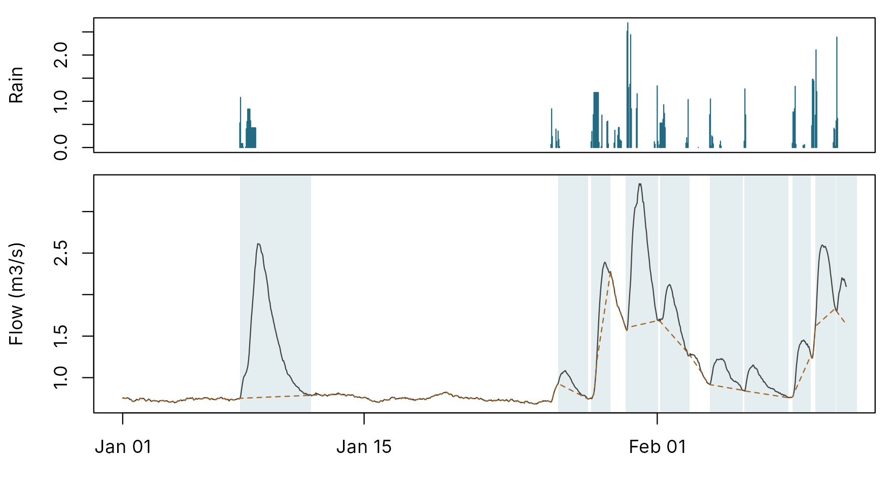
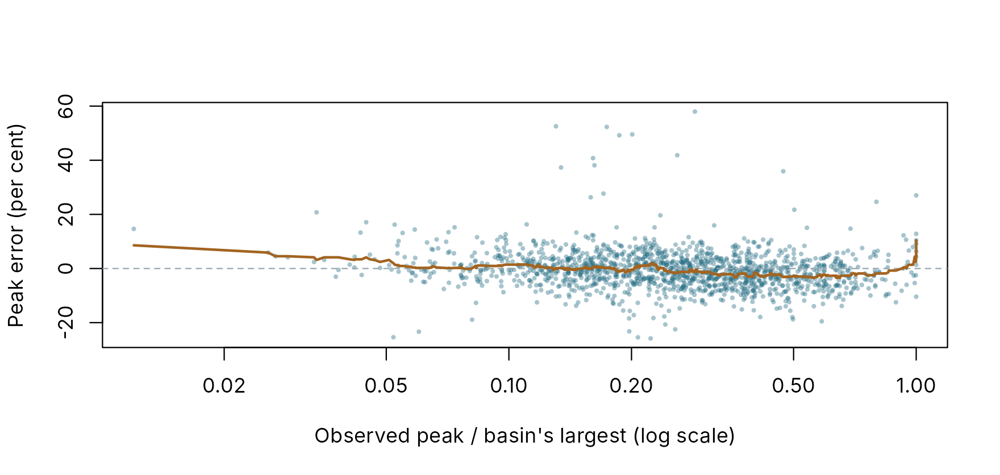

Events in large samples: finding them and scoring models on them
pdmS7 documentation
Source:vignettes/events.Rmd
events.RmdA score over a whole record says how a model does on average. Flood forecasting asks how it does during events: how big the peak is, when it comes, how much water passes. Answering that needs the events, and finding them by hand is slow for one catchment and impossible for hundreds.
find_events() finds them objectively, from the rain and
flow records alone, with the method of Giani et al. (2022), DMCA-ESR. It
needs no baseflow separation and one setting, works at any time step
that resolves the delay between rain and flow, and estimates the
catchment’s response time on the way. event_scores() then
scores a model on each event, and batch_events() does both
for every basin of a batch.
How the method finds events
The method rests on one estimate: the catchment’s response time, the average lag between the centre of mass of rain and the centre of mass of the flow it produces. Rain and flow are each accumulated, and each cumulative series has its moving average subtracted, leaving its fluctuations. Over a window about twice the response time, the two fluctuation series are most strongly anti-correlated, and that window is the estimate (Giani et al., 2021).
At that window, an event is under way wherever both rain and flow
fluctuate. The method takes each such stretch as an event’s core, moves
its edges out to where the rain starts and stops and where the flow
starts to rise and finishes receding, and discards or merges events that
do not fit. The only setting is rain_min, the smallest rain
intensity that counts at the time step: by default 0.2 mm/h for hourly
data, following the authors’ guidance for British catchments.
One catchment
A synthetic catchment, two years of hourly data, shows the result. Its true model is known, so its true response can be set beside the estimate.
river <- synthetic_catchment(years = 2, dt = 1, seed = 3)
events <- find_events(river$forcing$rain, river$observed, river$forcing$time, dt = 1,
area_km2 = river$truth$area_km2)
response <- attr(events, "response")
c(events = nrow(events), response_h = response$response_h)
#> events response_h
#> 171 6
head(events[, c("rain_start_time", "flow_end_time", "rain_mm", "peak_flow", "runoff_ratio")])
#> rain_start_time flow_end_time rain_mm peak_flow runoff_ratio
#> 1 2010-10-04 21:00:00 2010-10-08 16:00:00 10.2353620 0.9410019 0.12013889
#> 2 2010-10-10 04:00:00 2010-10-13 09:00:00 15.0062426 1.1964579 0.11265418
#> 3 2010-10-16 17:00:00 2010-10-17 09:00:00 0.8539137 0.3968773 0.01112760
#> 4 2010-10-17 13:00:00 2010-10-19 03:00:00 26.1344619 2.2168551 0.04893590
#> 5 2010-10-19 23:00:00 2010-10-23 14:00:00 8.9288287 1.3648016 0.07261871
#> 6 2010-11-01 11:00:00 2010-11-02 14:00:00 15.1561322 1.6557732 0.03854334
window <- which(river$forcing$time >= as.POSIXct("2011-01-01", tz = "UTC") &
river$forcing$time < as.POSIXct("2011-02-12", tz = "UTC"))
tm <- river$forcing$time[window]
layout(matrix(1:2), heights = c(1, 2))
par(mar = c(0.5, 4.2, 0.8, 0.8))
plot(tm, river$forcing$rain[window], type = "h", col = pal[2], xaxt = "n", xlab = "",
ylab = "Rain")
par(mar = c(3.5, 4.2, 0.5, 0.8))
plot(tm, river$observed[window], type = "n", xlab = "", ylab = "Flow (m3/s)")
shown <- events[events$flow_end >= min(window) & events$flow_start <= max(window), ]
for (e in seq_len(nrow(shown))) {
rect(river$forcing$time[shown$flow_start[e]], par("usr")[3],
river$forcing$time[shown$flow_end[e]], par("usr")[4],
col = adjustcolor(pal[2], 0.12), border = NA)
}
lines(tm, river$observed[window], col = pal[1])
lines(tm, attr(events, "baseflow")[window], col = pal[3], lty = 2)
Six weeks of the record. Rain (top, mm per hour) and flow (bottom, m3/s); shaded spans are the flow windows of the events found, and the dashed line is the baseflow line joining them.
The method finds about 86 events a year in this record: every burst of rain that moves the flow is an event, small ones included. Studies of floods keep the largest, by peak or by rain depth; the table has the columns to choose them.
The response time comes out at 6 hours. The model’s own response to a pulse of rain peaks after 12.1 hours. The two measure different things, and the estimate is not a time to peak. On constructed records it recovers the centre of mass of a symmetric response exactly, and falls short of the centre of mass of one with a long recession tail, which carries much of the water but little of the timing. It is best read as the timescale of the fast response, and best used to compare like with like: one catchment’s observed and simulated flow, or catchments with each other.
A sample
batch_events() finds and scores the events of every
basin in a batch. Here is a batch of eight synthetic catchments with two
years of hourly data each, calibrated automatically.
basins <- file.path(tempdir(), "event-basins")
output <- file.path(tempdir(), "event-projects")
unlink(c(basins, output), recursive = TRUE)
sample <- synthetic_basins(basins, n = 8, years = 2, dt = 1, seed = 21)
limited <- identical(toupper(Sys.getenv("_R_CHECK_LIMIT_CORES_")), "TRUE")
cores <- if (limited) 2L else min(4L, max(1L, parallel::detectCores() - 1L))
status <- calibrate_batch(basins, output, starts = 2, control = list(maxit = 30),
cores = cores)
seconds <- system.time(found <- batch_events(output))[["elapsed"]]
found$basins[, c("basin", "response_observed_h", "response_simulated_h", "events",
"median_abs_peak_error", "median_abs_timing_error_h")]
#> basin response_observed_h response_simulated_h events median_abs_peak_error
#> 1 S001 11 11 128 0.03587525
#> 2 S002 3 3 203 0.04292708
#> 3 S003 4 4 198 0.04965517
#> 4 S004 2 2 217 0.03652808
#> 5 S005 9 9 149 0.03956633
#> 6 S006 16 16 113 0.03798092
#> 7 S007 2 2 240 0.03472890
#> 8 S008 3 3 212 0.03733575
#> median_abs_timing_error_h
#> 1 3
#> 2 1
#> 3 1
#> 4 0
#> 5 3
#> 6 8
#> 7 0
#> 8 0Finding and scoring 1460 events across 8 basins took 1.5 seconds. In every basin the response time of the calibrated model matches the response time of the record: the models respond as fast as the catchments do.
Each event is labelled with the window that holds its observed peak,
so performance on the calibration and validation windows can be told
apart. Events in the warm-up before calibration (outside)
are scored too, but a model is still settling there.
by_period <- aggregate(cbind(abs_peak_error = abs(peak_error),
abs_timing_error_h = abs(timing_error_h),
abs_volume_error = abs(volume_error)) ~ period, e,
stats::median)
by_period[-1] <- round(by_period[-1], 3)
by_period
#> period abs_peak_error abs_timing_error_h abs_volume_error
#> 1 calibration 0.038 1 0.033
#> 2 outside 0.063 1 0.054
#> 3 validation 0.036 1 0.034The largest events matter most for flood forecasting, and they are the ones a whole-record score is least able to describe. Here the largest tenth of each basin’s events, by observed peak, are set against the rest.
e$relative_peak <- e$observed_peak / ave(e$observed_peak, e$basin, FUN = max)
e$largest <- ave(e$observed_peak, e$basin, FUN = function(x) x >= stats::quantile(x, 0.9))
plot(e$relative_peak, 100 * e$peak_error, pch = 16, cex = 0.5, col = adjustcolor(pal[2], 0.4),
log = "x", xlab = "Observed peak / basin's largest (log scale)",
ylab = "Peak error (per cent)")
abline(h = 0, lty = 2, col = pal[7])
o <- order(e$relative_peak)
lines(e$relative_peak[o], 100 * stats::runmed(e$peak_error[o], 101), col = pal[3], lwd = 2)
Peak error of each event, by observed peak relative to the basin’s largest. Each point is one event; the line is a running median.
size <- aggregate(cbind(peak_error = peak_error, timing_error_h = timing_error_h) ~ largest,
e, stats::median)
size
#> largest peak_error timing_error_h
#> 1 0 -0.005632428 0
#> 2 1 -0.024807686 0On the largest tenth of events the median peak is 2 per cent low, against 1 per cent low on the rest. A batch can then list the events that need a look, the worst large ones first, without anyone searching the records by hand:
worst <- e[e$largest == 1, ]
columns <- c("basin", "period", "flow_start_time", "observed_peak", "simulated_peak",
"peak_error", "timing_error_h")
worst <- worst[order(-abs(worst$peak_error)), columns]
head(worst, 5)
#> basin period flow_start_time observed_peak simulated_peak
#> 1436 S008 validation 2012-05-03 20:00:00 86.241304 109.539143
#> 1348 S008 calibration 2011-06-12 02:00:00 68.876067 85.846460
#> 1016 S007 outside 2010-10-24 03:00:00 28.537729 22.965977
#> 164 S002 calibration 2011-01-14 14:00:00 2.232501 1.901906
#> 722 S004 validation 2012-05-31 05:00:00 26.223558 30.083147
#> peak_error timing_error_h
#> 1436 0.2701471 0
#> 1348 0.2463903 1
#> 1016 -0.1952416 0
#> 164 -0.1480829 0
#> 722 0.1471802 0Of these five, 3 peaked above the basin’s highest gauged flow, where the synthetic rating records flow low, and in 3 of them the model runs above the recorded peak. A large event that looks badly simulated may be a badly recorded one; Larger floods explains how to tell.
Speed
Estimating the response time is the costly part: the correlation is
computed for every window up to the longest response searched, by
default 150 hours. The search runs in the compiled core;
options(pdmS7.engine = "r") runs the R reference instead.
Here both are timed on ten years of 15-minute data.
quarter <- synthetic_catchment(synthetic_rain("2010-10-01", years = 10, dt = 0.25, seed = 4),
seed = 4)
rain <- quarter$forcing$rain
flow <- quarter$observed
compiled <- system.time(fast <- response_time_dmca(rain, flow, dt = 0.25))[["elapsed"]]
op <- options(pdmS7.engine = "r")
reference <- system.time(slow <- response_time_dmca(rain, flow, dt = 0.25))[["elapsed"]]
options(op)
all_events <- system.time(quarter_events <- find_events(rain, flow, dt = 0.25))[["elapsed"]]
c(steps = length(rain), windows = nrow(fast$curve), compiled_s = round(compiled, 2),
r_s = round(reference, 1), same_answer = fast$response_h == slow$response_h,
find_events_s = round(all_events, 2), events = nrow(quarter_events))
#> steps windows compiled_s r_s same_answer
#> 350400.00 600.00 0.55 18.80 1.00
#> find_events_s events
#> 0.59 842.00The compiled search took 0.55 seconds against 18.8 in R, with the same answer, and finding all 842 events took 0.59 seconds in all. A batch of hundreds of basins at 15 minutes is a matter of minutes.
Limits
- The time step must resolve the delay. With daily data, a catchment that responds within a day shows a response time of one step, and its events are coarse. Hourly or finer data suit most British catchments.
- The response time is not a time to peak or a lag of the whole hydrograph. It is the timescale of the fast response; compare it like with like.
- The method assumes rain drives flow. Snowmelt, reservoirs and abstractions break that link, and events there need care.
- Missing values count as zero in the cumulative series, as in the published method, so long gaps in flow distort the response time. Fill or trim them first.
- A smooth recession can run on to the next storm. A flow window ends when the recession stops; on a very smooth record that may be the next event’s rise.
find_events() is an independent implementation of the
published method, from the paper and the authors’ reference code. Its
tests check it on records with known storms and responses. It was also
checked against the authors’ MATLAB code, run in Octave, on three
synthetic records: two years of hourly data from a fast and a slow
catchment, and ten years of daily data. The response times and all 663
event windows were identical. That check cannot run when this page is
built, so its result is stated here rather than computed.
References
Giani, G., Rico-Ramirez, M. A. and Woods, R. A. (2021). A practical, objective, and robust technique to directly estimate catchment response time. Water Resources Research, 57, e2020WR028201. doi:10.1029/2020WR028201.
Giani, G., Tarasova, L., Woods, R. A. and Rico-Ramirez, M. A. (2022). An objective time-series-analysis method for rainfall-runoff event identification. Water Resources Research, 58, e2021WR031283. doi:10.1029/2021WR031283.